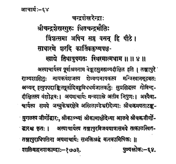

64. आचार्य - 64 - चन्द्रशेखरेन्द्रः
श्रीचन्द्रशेखरगुरुः ••• स्थिरमात्मधाम ॥ ४ ॥
Devoted to Lord Candramauli, preceptor Śrī Candraśekhara too remaining in the Piṭha for thirty-seven years reached his eternal abode on the first day of Kṛṣṇapakṣa in the month of Kārthika of the year Sādhāraṇa.
The name of this preceptor before initiation was Veñkatasubrahmaṇya Dīkṣita. He was a descendant of the family of Govinda Dīkṣita, well-known as "Ayyan" who carried out many righteous acts of "pūrta" and adorned the ministerial post in the assembly of King Sevappa Nāyaka of the Nāyaka dynasty ruling Thanjavur. This preceptor was well-versed in Mantra Śāstra. Only during the period of this preceptor, the renovation or re-installation of the pair of ear-rings (taṭaṅka yugala) symbolic of Sricakra, of Goddess Akhilāṇdeśvarī of Jambukeśvara, renovation of Sricakra in the Kāmākṣī temple at Kāñci were carried out. During his visit ot Tanjavur, the preeptor was reverentially coronated with gold or offered Kanakābhiṣeka by the monarch who was ruling Tanjavur. Śalivahana era 1773.
